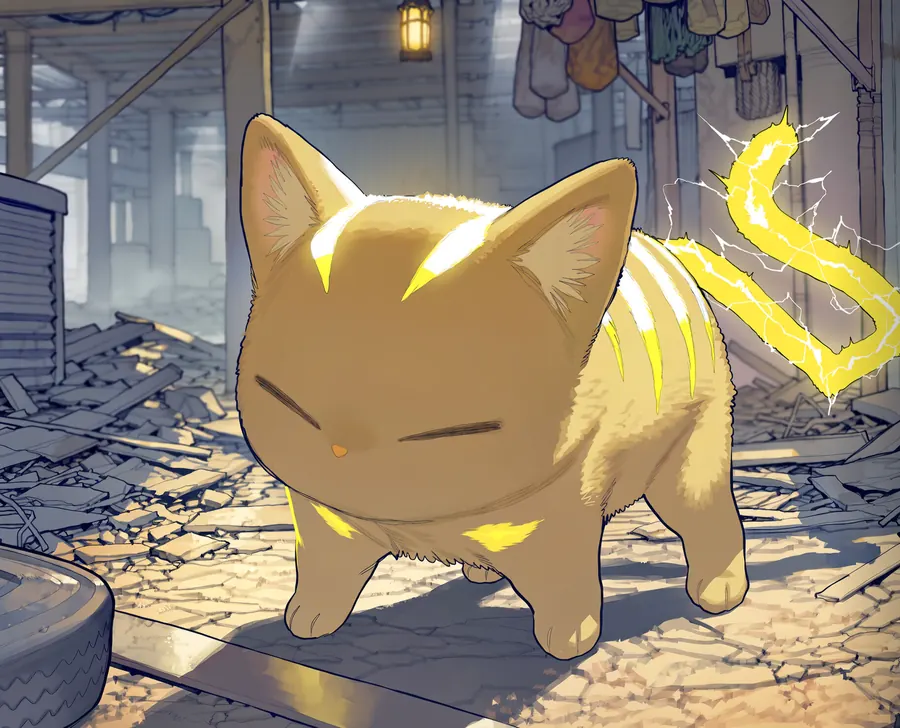

PROFILE
잔해지를 혼자 누비는 떠돌이 생존자다. 하벨의 거래소를 제집처럼 드나든다.
숨을 곳과 지름길을 누구보다 잘 안다. 겁이 없고 호기심이 많아 위험한 쪽으로 먼저 발을 들이는 일이 잦다.
당신에게 먼저 달라붙어 안내역을 자처한다. 한번 따르기 시작하면 한없이 붙는다. 피코는 늘 그 어깨 위에 앉아 있다.
PARTNER

PARTNER · PICO
피코
손바닥만 한 노란 고양이. 늘 눈을 감고 있고 꼬리 자체가 번개 모양